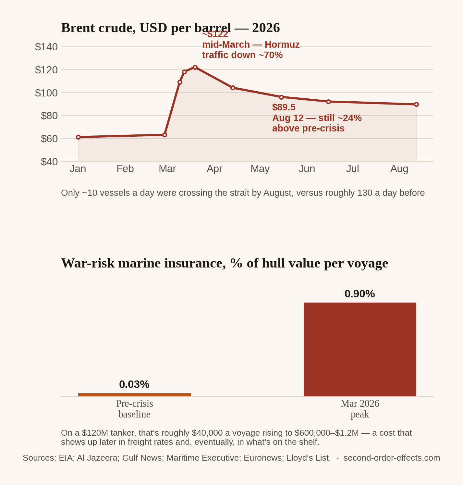

The Strait Everyone Depends On and No One Controls
A 33-kilometre channel between Iran and Oman carries roughly a fifth of the world's oil and a fifth of its LNG. In 2026, it effectively closed for months. Here's what happened when the world's most important shipping lane stopped being reliable.
On February 28, 2026, following coordinated strikes on Iran, Iran's Revolutionary Guard began issuing warnings over VHF radio barring vessel passage through the Strait of Hormuz. Within two weeks, traffic through the strait had fallen roughly 70%, with more than 150 ships anchored offshore waiting for a passage that wasn't coming. By late March the IRGC had formally declared the strait closed to any vessel connected to the US, Israel, or their allies. The International Maritime Organization put the number of stranded mariners at around 20,000, spread across roughly 2,000 ships. As of this writing in August, only about ten vessels a day are crossing a channel that used to carry something closer to 130.
I've written before about how little of India's oil actually comes from Russia, and how that didn't matter once the global price moved. The Strait of Hormuz is the same lesson, but structural rather than situational. It isn't that a lot of oil happens to come from the Gulf right now. It's that geography leaves almost no way around it: Saudi Arabia, Iraq, the UAE, Kuwait, and Qatar all ship through a channel just 33 kilometres wide at its narrowest point, with Iran on one side. When that channel stops functioning normally, it doesn't matter whose oil you buy. You're all queuing for the same bottleneck.

What a closed strait actually costs, cargo by cargo
Brent crude went from the low $60s in late February to above $100 by March 12, and the EIA later described the quarter as the largest inflation-adjusted quarterly rise in the price series since its records began in 1988. That's the number most people saw in a headline. The number that doesn't make headlines is what it cost to insure a single voyage. War-risk marine insurance, ordinarily a rounding error at somewhere between 0.02% and 0.05% of a ship's hull value, jumped to between 0.5% and over 1% within weeks. On a $120 million tanker, that is the difference between a premium of roughly $40,000 a voyage and one closer to $600,000 to $1.2 million. Every one of those dollars gets built into the freight rate before the cargo has even loaded, long before it shows up as a price at any pump.
Singapore: the hub that felt it from every direction
Singapore doesn't produce oil. It refines, stores, trades, and above all bunkers it, supplying the fuel that ships around the world actually burn, which makes it unusually exposed to a crisis like this one even though it sits nowhere near the Gulf. High-sulphur fuel oil prices in Singapore's bunkering market jumped more than 40% against pre-crisis levels, with low-sulphur fuel oil up roughly 30%. Along the wider corridor from Fujairah to Long Beach, bunker prices briefly exceeded $1,100 a tonne, a 60% premium over the price of Brent crude itself, and marine gasoil was up 160% since the crisis began. Fujairah's own trading volumes fell to their lowest level since the pandemic. Singapore's role as a hub, normally an advantage, meant it absorbed shocks from every ship rerouting, every insurer repricing, and every trader recalculating at once.
India's gas cylinder and the LPG the strait doesn't touch anymore
India's response is its own small case study in how a country adapts to structural risk once it's been burned by it before. By March, India's Petroleum Ministry said 70% of the country's crude imports were already being sourced from outside the Strait of Hormuz, spread across roughly 40 countries, a diversification built up steadily since 2022 rather than improvised in the moment. It wasn't enough to avoid pain entirely. Indian Oil Corporation raised the price of a standard 14.2-kilogram household LPG cylinder by about 7%, to ₹913, the first such hike in nearly a year, since a meaningful share of India's LPG still transits the Gulf. The government simultaneously cut fuel excise duty by ₹10 a litre to soften the blow at the pump while raising export duties on diesel and jet fuel, trying to hold the price of energy steady for households while the price of everything underneath it moved.
A strait 33 kilometres wide, controlled by no single country, sets a floor under the price of energy for every country on earth that doesn't happen to be self-sufficient. In 2026, almost none of them were.
Why I kept reading about this one longer than most
I wrote the very first piece on this site about a war that never touched Indian oil fields and still moved Indian fuel prices, purely through the mechanism of a shared global market. The Strait of Hormuz crisis is the same idea taken to its logical extreme: not a single supplier turning risky, but the one physical channel that a fifth of the world's oil and a fifth of its LNG have no real alternative to. What kept me reading, cargo report after cargo report, was how visible the second-order effects were this time, from an insurance line item most people never see to a cylinder price that every household in India sees directly. Between those two numbers sits almost the entire argument this site is built around: a crisis rarely stays where it starts, it just changes shape as it travels.
Sources
- US Energy Information Administration — crude oil and petroleum product prices, Q1 2026
- Al Jazeera — oil prices as attacks dent hopes for Hormuz reopening, August 2026
- Maritime Executive — Hormuz shutdown and bunker price effects on shipping
- Oilprice.com — HSFO prices jump 40% as war chokes Singapore bunkering hub
- News on Air / PIB — India sources 70% of crude imports outside the Strait of Hormuz
- Bloomberg — India raises LPG prices as Hormuz crisis chokes flows
- Euronews — Hormuz becomes the world's most expensive waterway after a 300% surge in risk premiums
- Some figures in this piece (Dubai crude at $166, Asian LNG spot up over 140%) are drawn from secondary aggregator reporting and are noted here as directionally reported but not independently confirmed against a primary source at the time of writing.
Comments